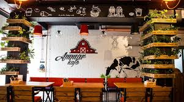
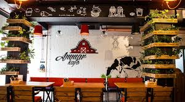

Hotels near/Where to eat
Choose your best option

Yyldyz Hotel

Archabil Hotel

Oguzkent Hotel
Choose your restaurant, or try them all
Amman restaurant

Alp Et restaurant

Choose your best option
Choose your restaurant, or try them all

 Academic Purpose
Academic Purpose